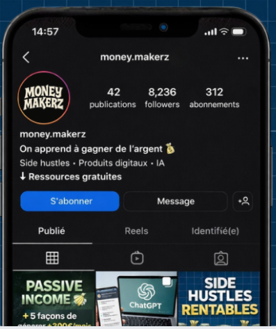

Money Makerz s'est lancé pour pallier ce problème.
Voici ce qu'on a vraiment appris en essayant.
7 étudiants · une équipe en veille continue · FR · 2026
"Construire le compte qu'on aurait voulu suivre nous-mêmes."
PROMESSE : DE L'IDÉE — AUX REVENUS.
Des dizaines de millions de jeunes cherchent une voie alternative au salariat classique.
Tester au lieu de promettre. Notre force vs influenceurs : on a les vrais chiffres.
Audience monétisée (ebooks) + idées testées qui génèrent du cash. Le projet s'auto-finance.
→ on s'est lancés à 7, convaincus.
L'IA s'est intégrée naturellement : veille accélérée, structuration de contenu. Exemple : les 30 prompts de l'ebook générés et triés en 2h au lieu de 2 semaines.

★ COMPTE @MONEY.MAKERZ ★
91 reels publiés · cadence quasi-quotidienne
→ et puis on a touché du doigt la vraie réalité.
★ Le revers honnête : moins de 50 000 vues cumulées. Pas de viralité. On gagnait des followers à la main, un par un.
★ REEL RÉEL · POSTÉ ★
1 des 91 reels publiés — preuve du travail produit
on tenait quelque chose. mais pas pour les raisons qu'on croyait.
Tenir ensemble
quand tout s'écroule.
Pas la leçon qu'on cherchait.
La plus précieuse qu'on a eue.
On s'est posé la question, en groupe : est-ce qu'on veut signer ça ?
Réponse : non. À l'unanimité.
★ La leçon : L'IA, seule, ne crée pas de valeur. Elle accélère. Elle ne remplace pas la voix. Sans humain derrière, l'algorithme finit toujours par s'en apercevoir.
| L'événement | Ce qu'on a fait techniquement | Ce qu'on en a fait, à 7 |
|---|---|---|
| Ban Instagram –8 236 abos · –91 reels en 1 nuit |
Reset complet du compte. Analyse technique de la cause. | On s'est parlé sans se blâmer. Personne n'a tenu personne responsable. |
| TikTok IA 0 € · 3 semaines |
Arrêt complet de la production IA générique. | On a posé une limite éthique commune. Pas vendre ce qu'on ne signerait pas. |
| Dispersion à 7 3 canaux en parallèle |
Re-priorisation des canaux. Focus single-channel. | On a redécoupé les rôles selon les vraies envies de chacun, pas selon les compétences supposées. |
Ce qui compte, ce n'est pas la décision. C'est qu'elle ait été prise à 7.
→ la colonne de gauche rend la colonne de droite vendable.
95% ÉCHOUENT · 5% RÉUSSISSENT
On voulait éviter le 95% d'échec. Comme si on pouvait sauter cette étape.
Accepter les 95% d'échec comme matière première. C'est en passant par eux qu'on construit le 5% qui marche.
→ une fois la leçon comprise, on a su construire ce qu'il fallait :
Agence web propulsée à l'IA
Loic · Louis
Réserver son coiffeur en 2 clics
Nathan · Enzo
Une agence de marketing digital qui aide les marques à exister en ligne. L'IA accélère. Nous portons la voix.
Forfait fixe par livrable · facturation classique
Si on ne livre pas, on ne gagne pas. Performance pure.
Pas grâce à l'IA. Grâce à 6 mois à 7 d'apprentissage.
1er client AI Need déjà signé. Le modèle fonctionne avant même la sortie des YDays.
DÉCOUVRIR
MONEY
MAKERZ
money-makerz
.vercel.app
GUIDE
BUSINESS
80 PAGES
.../ebook.pdf
PDF · 7€
C'est ça qu'on vend aux marques. Pas un service IA — une équipe qui sait rester soudée quand tout s'écroule.
DE L'IDÉE AUX REVENUS — AUTREMENT.
AI NEED · @MONEY.MAKERZ · MERCI · Q&A OUVERT